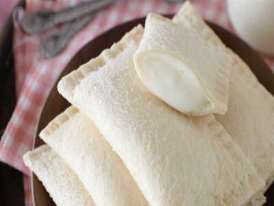

|  |
Food's name: Yogurt cake▸ Ingredients:
▸ Time to prepare: 60 minutes ▸ Approx quantity: 50 cakes |
▸ Detailed recipe:
Step 1: Make the Cake Filling:
- Prepare a clean bowl or bowl, put unsweetened yogurt, sweetened condensed milk into the bowl, and stir well. Add the
mayonnaise to the mixture and continue stirring until the mixture is uniform.
- Put a non-stick pan on the stove, pour the mixture into the pan and cook on low heat until the mixture gradually warms up.
While waiting, you put the cornstarch in a small bowl with the prepared amount of water and stir it into a homogeneous mixture.
- When you see the cake mixture boiling, you add the cornstarch made, stir the mixture. Continue to cook until the mixture
becomes a thick mixture, then turn off the heat. Let the mixture cool and then place in the fridge for about 2 hours.
Step 2: The Cake Crust:
- The sandwich bread makes the crust, you cut off the edge of the cake. Then place each piece of cake on a dry flat surface or
a cutting board, use a rolling pin to flatten the bread so that they form a flat piece.
Step 3: Step into Cake:
- Take out the cake, use a silicone brush to spread a thin layer of yogurt cake on 3 edges of the cake, and then fold the cake
in half. Use a fork to press the edges of the cake together to form a bag-like shape.
=> After completing the above steps, you have yourself a delicious and greasy cake.
▸ Calories and related information: